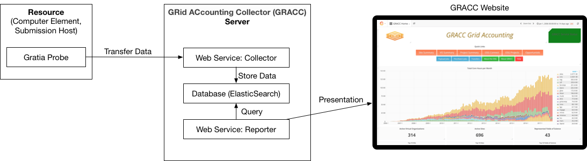

Troubleshooting Gratia Accounting¶
Gratia is software used in OSG to gather accounting information for usage of computational resources. This information is collected from individual services at a site, such as a Compute Entrypoint (CE) or an Access Point (AP), through "Gratia probes" and transferred to the central OSG GRACC server.
Gratia probes are run periodically as cron jobs under an HTCondor Schedd process (i.e., Schedd cron jobs) as the
condor user.
The commands that you run, configuration locations that you verify, and log locations that you check will depend on the
type of host that you are troubleshooting.
Accounting Architecture¶

These are the definitions of the major elements in the above figure.
- Gratia probe: A piece of software that collects accounting data from the host on which it's running, and transmits it to the GRACC server.
- GRACC server: A server that collects Gratia accounting data from one or more sites and can share it with users via a web page. The GRACC server is hosted by the OSG.
- Reporter: A web service running on the GRACC server. Users can connect to the reporter via a web browser to explore the Gratia data.
- Collector: A web service running on the GRACC server that collects data from one or more Gratia probes. Users do not directly interact with the collector.
You can explore the details of the OSG accounting data at https://gracc.opensciencegrid.org and https://display.osg-htc.org/.
Determine Your Host Type¶
Before continuing with the rest of the document, it is important to know what type of host you are troubleshooting:
- Do users log into this host and submit jobs? Then you are running an Access Point
- Does this host accept pilot jobs from remote clients? Then you are running a Compute Entrypoint
If you are still not sure, you can run the following command to determine if this is a CE installation:
$ rpm -q osg-ce
osg-ce-24-1.osg24.el9.x86_64
If the output is blank, then you are not working with a CE host.
Access Points vs Compute Entrypoints
A single host should not be used as both an AP and a CE but if you've inherited a host, it's possible that the host was installed improperly.
Is Gratia Up-To-Date?¶
Ensure that you have the latest bug-fixes:
yum update 'gratia-probe*'
Is Gratia Running?¶
Since Gratia probes run as Schedd cron jobs, first verify that the relevant HTCondor service is running based on the type of host that you are troubleshooting:
| Host | Command |
|---|---|
| Access Point | systemctl status condor |
| Compute Entrypoint | systemctl status condor-ce |
If they are not running, consult the relevant documentation to enable and start the appropriate service:
Identifying failures¶
Schedd cron jobs are logged to the SchedLog, whose location depends on the type of host you are troubleshooting:
| Host | Log Path |
|---|---|
| Access Point | /var/log/condor/SchedLog |
| Compute Entrypoint | /var/log/condor-ce/SchedLog |
Currently, the default log level does not show Schedd cron job activity (future releases will show failures by default) so you must perform the following steps to see the relevant log messages:
-
Identify the configuration location for your host:
Host Configuration Directory Access Point /etc/condor/config.dCompute Entrypoint /etc/condor-ce/config.d -
In a
.conffile in the configuration directory that you determined above, increase the debug level:SCHEDD_DEBUG = $(SCHEDD_DEBUG) D_CAT D_ALWAYS:2
Successful cron jobs will appear in the relevant SchedLog like so:
05/06/22 19:25:31 (D_ALWAYS:2) CronJob: Starting job 'GRATIA' (/usr/share/gratia/htcondor-ce/condor_meter)
05/06/22 19:25:31 (D_ALWAYS:2) Create_Process: using fast clone() to create child process.
05/06/22 19:25:31 (D_ALWAYS:2) CronJob: STDOUT closed for 'GRATIA'
05/06/22 19:25:31 (D_ALWAYS:2) CronJob: STDERR closed for 'GRATIA'
05/06/22 19:25:31 (D_ALWAYS:2) CronJob: 'GRATIA' (pid 1082) exit_status=0
05/06/22 19:25:31 (D_ALWAYS:2) CronJob::Schedule 'GRATIA' IR=F IP=T IWE=F IOS=F IOD=F nr=116 nf=0
05/06/22 19:25:31 (D_ALWAYS:2) CronJob::Schedule 'GRATIA_CLEANUP' IR=F IP=T IWE=F IOS=F IOD=F nr=2 nf=0
Verifying packaging¶
Gratia probe RPM packaging will create the appropriate files and folder structure with the correct permissions so that Gratia probes can run smoothly. However, it's possible that stale configuration management or other automation scripts at your site could To verify that file contents and ownership have not been changed, run one of the following commands based on the type of host you are troubleshooting:
| Host | Command |
|---|---|
| Access Point | rpm -q --verify gratia-probe-condor-ap |
| Compute Entrypoint | rpm -q --verify gratia-probe-htcondor-ce |
Verifying configuration¶
When troubleshooting Gratia, there are two different configurations to investigate:
- HTCondor configuration if job history records aren't being processed.
- Gratia ProbeConfig if your job history records are being processed but they are either malformed or are not being sent to the GRACC
HTCondor configuration¶
The HTCondor and/or HTCondor-CE configuration determines where job history files are written and how often the Gratia probe Schedd cron job are run.
Access Points¶
Verify the values of your HTCondor PER_JOB_HISTORY_DIR configurations match the output below:
# condor_config_val -v PER_JOB_HISTORY_DIR
PER_JOB_HISTORY_DIR = /var/lib/condor/gratia/data
# at: /usr/share/condor/config.d/50-gratia-gwms.conf, line 28
# raw: PER_JOB_HISTORY_DIR = /var/lib/condor/gratia/data
-
If you see the above output, your Gratia Probe configuration is correct and you may continue onto the next section.
-
If you do not see the above output:
-
If the value of
condor_config_val -v PER_JOB_HISTORY_DIRis not/var/lib/condor/gratia/datanote its value. Then visit the referenced file, remove the offending configuration and repeat until the output ofcondor_config_val -v PER_JOB_HISTORY_DIRmatches the above output. -
If you noted a different value in step a, copy data from the old directory to the new directory and fix ensure that ownership is correct:
root@host # cp <ORIGINAL DIR>/* /var/lib/condor/gratia/data/ root@host # chown -R condor:condor /var/lib/condor/gratia/data/Replacing
<ORIGINAL_DIR>with the value that you noted in step a.
-
HTCondor-CE and HTCondor batch systems¶
Verify the values of your HTCondor and HTCondor-CE PER_JOB_HISTORY_DIR configurations match the output below:
# condor_ce_config_val -v PER_JOB_HISTORY_DIR
Not defined: PER_JOB_HISTORY_DIR
# at: <Default>
# raw: PER_JOB_HISTORY_DIR =
# condor_config_val -v PER_JOB_HISTORY_DIR
PER_JOB_HISTORY_DIR = /var/lib/condor-ce/gratia/data
# at: /etc/condor/config.d/99-gratia.conf, line 5
# raw: PER_JOB_HISTORY_DIR = /var/lib/condor-ce/gratia/data
-
If you see the above output, your Gratia Probe configuration is correct and you may continue onto the next section.
-
If you do not see the above output:
-
If the value of
condor_config_val -v PER_JOB_HISTORY_DIRis not/var/lib/condor-ce/gratia/datanote its value. Then visit the referenced file, remove the offending configuration and repeat until the output ofcondor_config_val -v PER_JOB_HISTORY_DIRmatches the above output. -
If the value of
condor_ce_config_val -v PER_JOB_HISTORY_DIRis set, visit the referenced file and remove the offending configuration. Repeat until the output ofcondor_ce_config_val -v PER_JOB_HISTORY_DIRmatches the above output. -
If you noted a different value in step a, copy data from the old directory to the new directory and fix ensure that ownership is correct:
root@host # cp <ORIGINAL DIR>/* /var/lib/condor-ce/gratia/data/ root@host # chown -R condor:condor /var/lib/condor-ce/gratia/data/Replacing
<ORIGINAL_DIR>with the value that you noted in step a.
-
HTCondor-CE and non-HTCondor batch systems¶
After updating your gratia-probe-* packages,
verify that your HTCondor-CE's PER_JOB_HISTORY_DIR is set to /var/lib/condor-ce/gratia/data:
root@host # condor_ce_config_val -v PER_JOB_HISTORY_DIR
PER_JOB_HISTORY_DIR = /var/lib/condor-ce/gratia/data
# at: /etc/condor-ce/config.d/99_gratia-ce.conf, line 5
# raw: PER_JOB_HISTORY_DIR = /var/lib/condor-ce/gratia/data
-
If you see the above output, your Gratia Probe configuration is correct and you may continue onto the next section.
-
If you do not see the above output, visit the file listed in the output of
condor_ce_config_val, remove the offending value, and repeat until the proper value is returned.
Gratia ProbeConfig¶
Access Points¶
Verify that your Gratia configuration is correct in /etc/gratia/condor-ap/ProbeConfig based on the table below:
-
Fill in the value for
SiteNamewith the Resource Name you registered in Topology (see this section for details). For example:SiteName="OSG_US_EXAMPLE_SUBMIT" -
Set the ProbeName:
ProbeName="condor-ap:<HOST_FQDN>"Replacing
<HOST_FQDN>with your access point's fully qualifed domain name -
Enable the Gratia Probe:
EnableProbe="1"
Compute Entrypoints¶
In normal cases, osg-configure manages the relevant ProbeConfig and it can be configured by modifying
/etc/osg/config.d/30-gratia.ini.
Consult the osg-configuration documentation for details.
If there are problems or special configuration, you might need to edit the Gratia configuration files yourself by
modifying /etc/gratia/htcondor-ce/ProbeConfig.
The ProbeConfig files have many details. A few options that you might need to edit are shown before. This is not a complete file, but only shows a subset of the options.
<ProbeConfiguration
CollectorHost="gratia-osg-itb.opensciencegrid.org:80"
SSLHost="gratia-osg-itb.opensciencegrid.org:80"
SSLRegistrationHost="gratia-osg-itb.opensciencegrid.org:80"
ProbeName="htcondor-ce:fermicloud084.fnal.gov"
SiteName="WISC_OSG_EDU"
EnableProbe="1"
/>
The options you see here are:
| Option | Comments |
|---|---|
| CollectorHost | The GRACC server this probe reports to |
| SSLHost | The GRACC server this probe reports to |
| SSLRegistrationHost | The GRACC server this probe reports to |
| ProbeName | The unique name for this probe. Note that it includes the probe type and the host name |
| SiteName | The name of your Resource, as registered in OSG Topology. |
| EnableProbe | The probe will only run if this is "1" |
Again, there are many more options in this file. Most of the time you won't need to touch them.
Have Records Been Uploaded To the GRACC?¶
If you have verified that your Gratia probe is running and you are receiving pilot jobs,
you should see data in the GRACC for your service approximately 24h after jobs have completed successfully by entering
your Topology-registered site name into the Facility dropdown:
If you still aren't seeing data in GRACC, use this section to ensure that your resources are registered properly.
Have you configured the resource names correctly?¶
Access Points¶
Ensure that SiteName in your ProbeConfig matches your Topology-registered resource name.
See this section for details
Compute Entrypoints¶
Do the names of your resources match the names in
OSG Topology?
Gratia retrieves the resource name from the Site Information section of the /etc/osg/config.d/40-siteinfo.ini
;===================================================================
; Site Information
;===================================================================
[Site Information]
; Set "group" to "OSG" for a production site, or "OSG-ITB" for an ITB site.
;
; YOU WILL NEED TO CHANGE THIS
group = OSG
; Set "host_name" to the host name of the CE being configured.
; This should resolve in DNS; if DNS is not set up yet, enter an IPv4/v6 address instead.
;
; YOU WILL NEED TO CHANGE THIS
host_name = tusker-gw1.unl.edu
; Set "resource" to the name of the resource that you have registered
; in the OSG topology repository at https://github.com/opensciencegrid/topology
;
; YOU WILL NEED TO CHANGE THIS
resource = Tusker-CE1
Do those names match the names that you registered with OSG Topology? If not, edit the names, and rerun "osg-configure -c".
Did the site name change?¶
Was the site previously reporting data, but the registered Topology site name changed? When the site name changes, you need to ask the GRACC operations team to update the name of your site at the GRACC collector:
- Open a support ticket
- Select "Software or Service"
- Select "GRACC Operations"
- Write a friendly email that asks the GRACC team to change your site name at the collector.
Make sure to tell them the old name and the new name:
Hello GRACC Team, Please change the site name of my site from <OLD NAME> to <NEW NAME>. Thanks, ...
Reference¶
If you need to look for more data, consider consulting some of the relevant files here:
| File | Purpose |
|---|---|
/var/log/condor/gratia/<DATE>.log or /var/log/condor-ce/gratia/<DATE>.log |
Log file that records information about processing and uploading of Gratia accounting data |
/var/lib/condor/gratia/data or /var/lib/condor-ce/gratia/data |
Location for AP and CE job data before being processed by Gratia HTCondor or HTCondor-CE's PER_JOB_HISTORY_DIR should be set to this location |
/var/lib/condor/gratia/tmp or /var/lib/condor-ce/gratia/tmp |
Location for temporary Gratia data as it is being processed, usually empty. If you have files that are more than 30 minutes old in this directory, there may be a problem |
/etc/gratia/condor-ap/ProbeConfig or /etc/gratia/htcondor-ce/ProbeConfig |
Configuration for Gratia probes |
Not all RPMs will be on all hosts.
Instead, only the gratia-probe-common and the one RPM specific to that host will be installed.
The most common RPMs you will see are:
| RPM | Purpose |
|---|---|
gratia-probe-common |
Code shared between all Gratia probes |
gratia-probe-condor-ap |
The probe that tracks Access Point usage |
gratia-probe-htcondor-ce |
Probe that tracks HTCondor-CE usage |